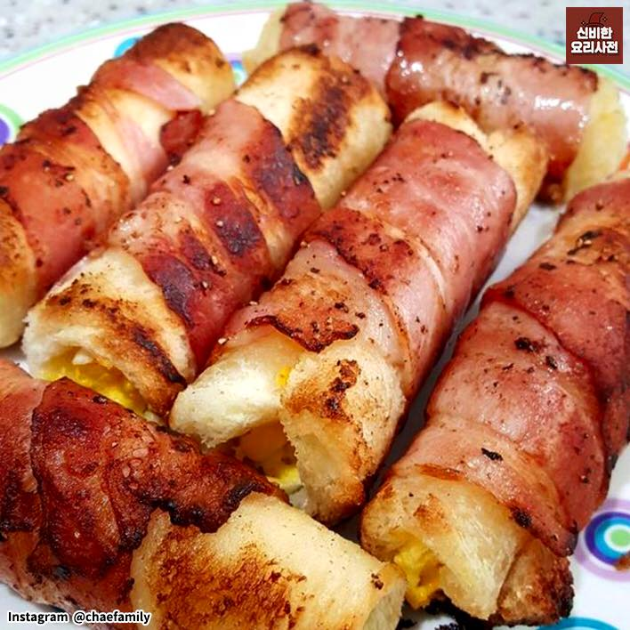
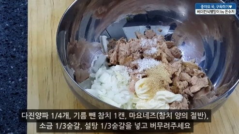
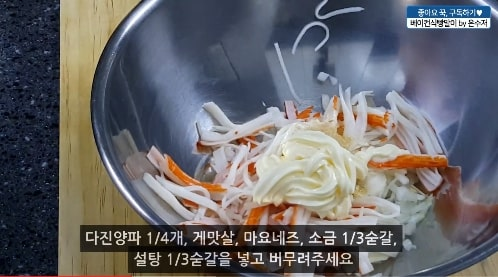
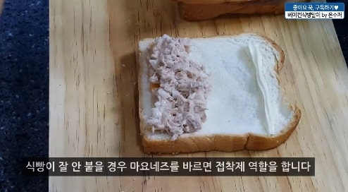
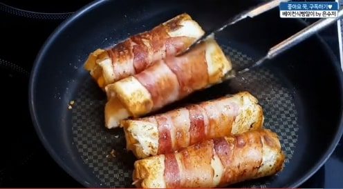

베이컨 식빵말이
Bacon bread

재료 : 양파, 베이컨, 식빵, 체다치즈, 계란, 게맛살(또는 참치), 마요네즈, 소금, 설탕
1. 양파를 다져주세요.

2. 다진양파 1/4개, 기름 뺀 참치 1캔, 마요네즈(참치 양의 절반), 소금 1/3숟가락
설탕 1/3숟가락을 넣고 버무려주세요. (사진-1)

3. 다진양파 1/4개, 게맛살, 마요네즈, 소금 1/3숟가락, 설탈 1/3숟가락을
넣고 버무려주세요. (사진-2)
4. 식빵을 밀대로 밀어주세요.

5. 식빵 끄트머리에 치즈와 속재료를 얹은 뒤 돌돌 말아주세요.
(사진-3)
6. 반대쪽끄트머리에는 마요네즈를 발라 접착제 역할을 하게해주세요.
7. 베이컨 2장을 식빵겉면에 말아주세요.

8. 팬에는 아무것도 올리지않고 베이컨 끄트머리가 아래로 가게 한다음 구워주세요.
(사진-4)